openharmony 南向开发参考
2026年10月17日比赛 · 平顶山 · 模版使用
1. 代码基本使用规则
第一步：将项目的gn文件中，项目源码以及头文件都链接进去
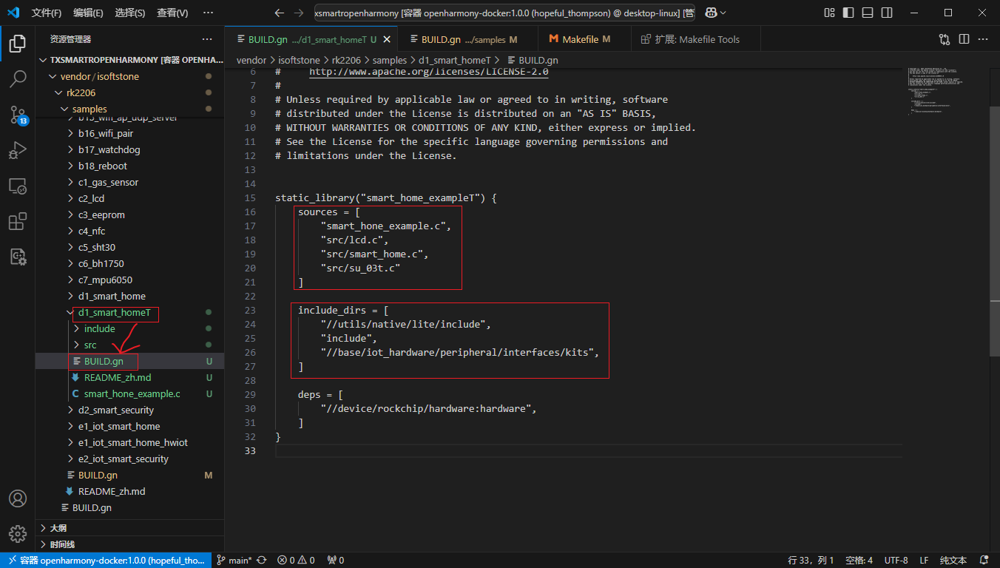
第二步：在samples下面的gn文件中将我们的项目链接进去
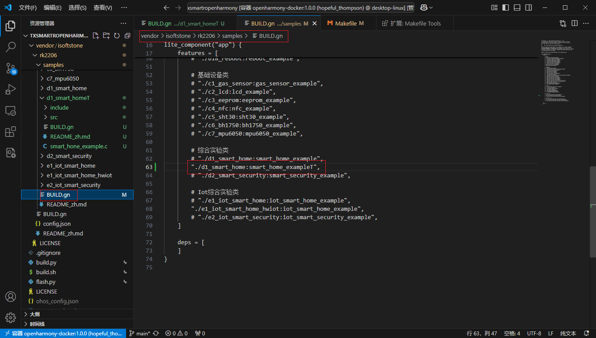
第三步：在device文件夹中将makefile文件中 -l 链接我们的项目
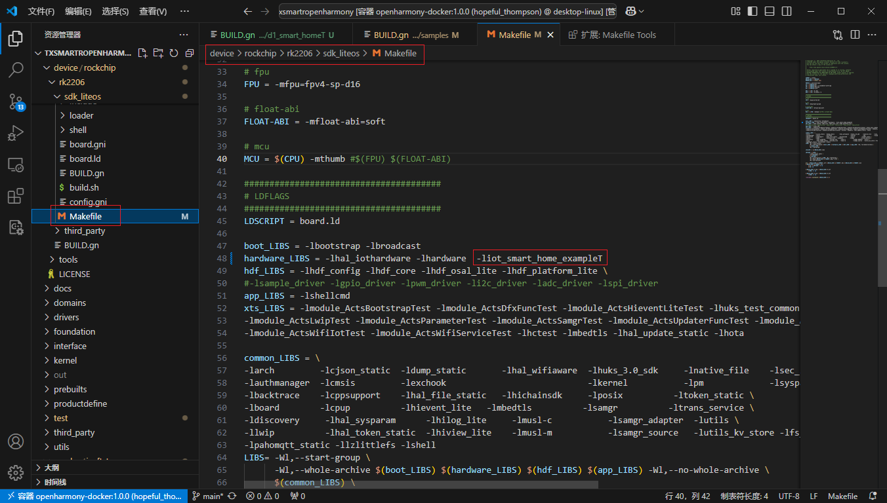
第四步：最后就可以编译我们的文件了
（要在Docker容器中执行）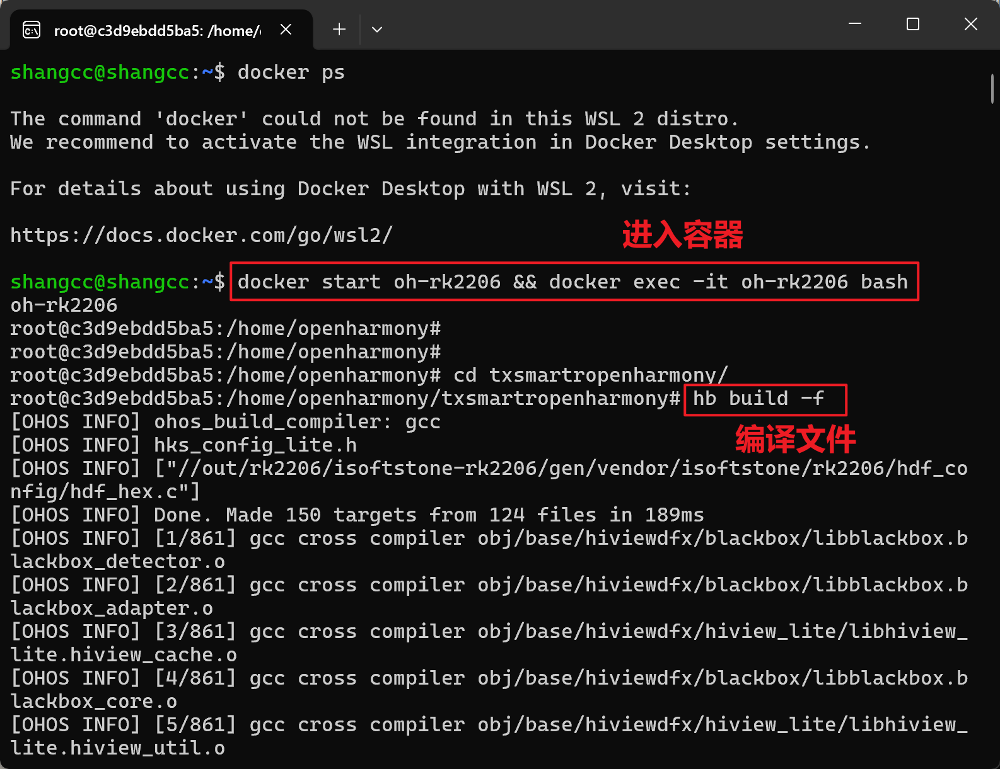
第五步：将编译好的文件烧录到开发板
下面路径找到images文件夹复制到桌面
txsmartropenharmony\out\rk2206\isoftstone-rk2206\images
使用烧录工具烧录到开发板就可以了

2. 编译内核开发-任务
第一步：修改build文件和makefile文件
（注意路径，别改错了）
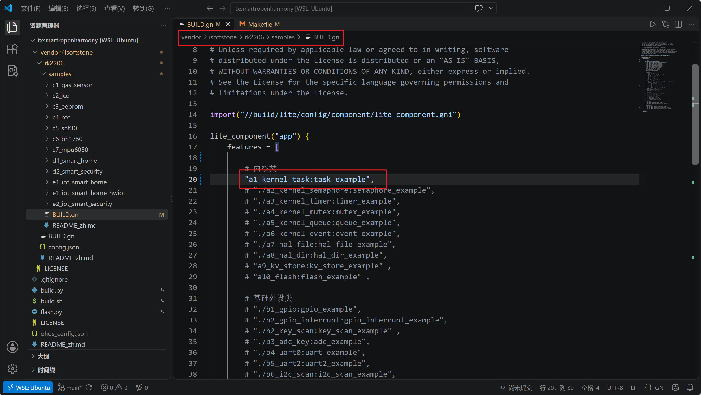
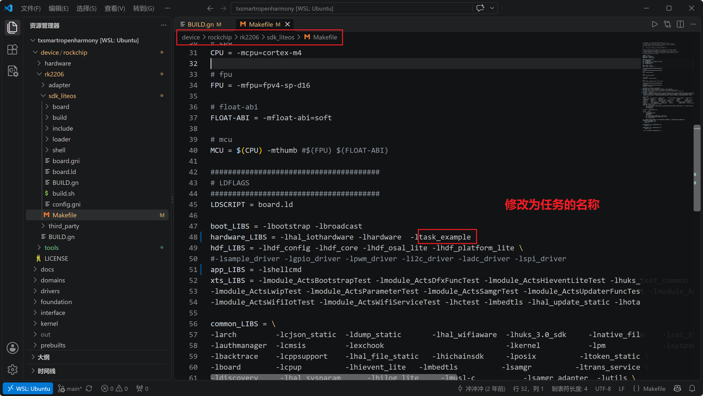
第二步：编译源代码
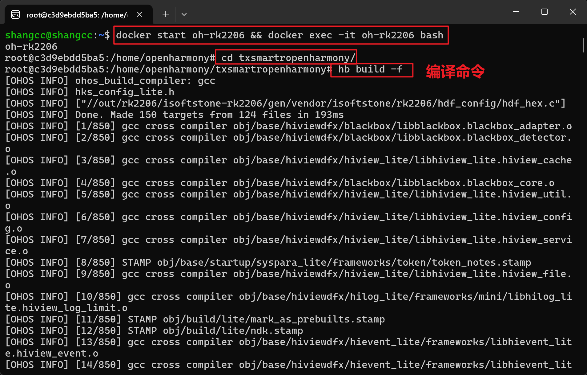
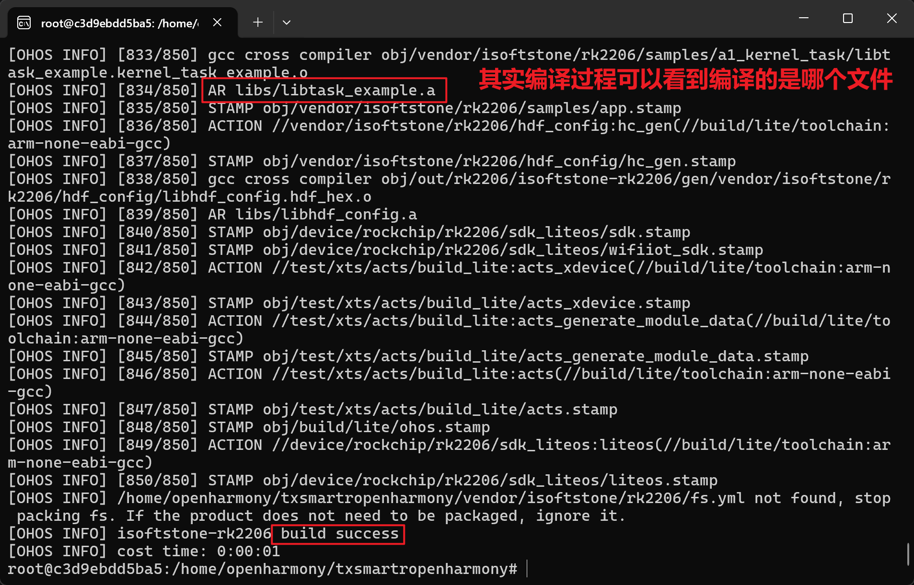
第三步：烧录程序
从下面项目路径下，将源码复制到Windows桌面，然后再烧录
txsmartropenharmony\out\rk2206\isoftstone-rk2206\images
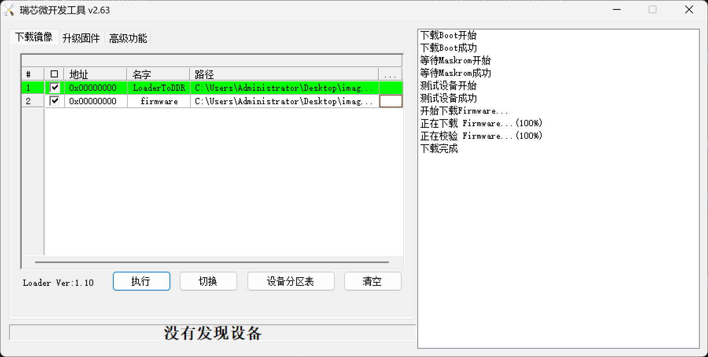
第四步：串口调试
新建一个连接注意：开发板连接线要插串口
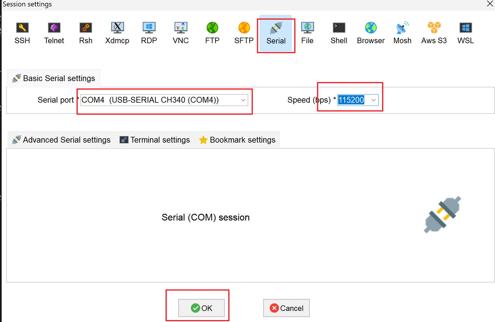
连接后显示的结果就是 任务1 和任务2 交替出现
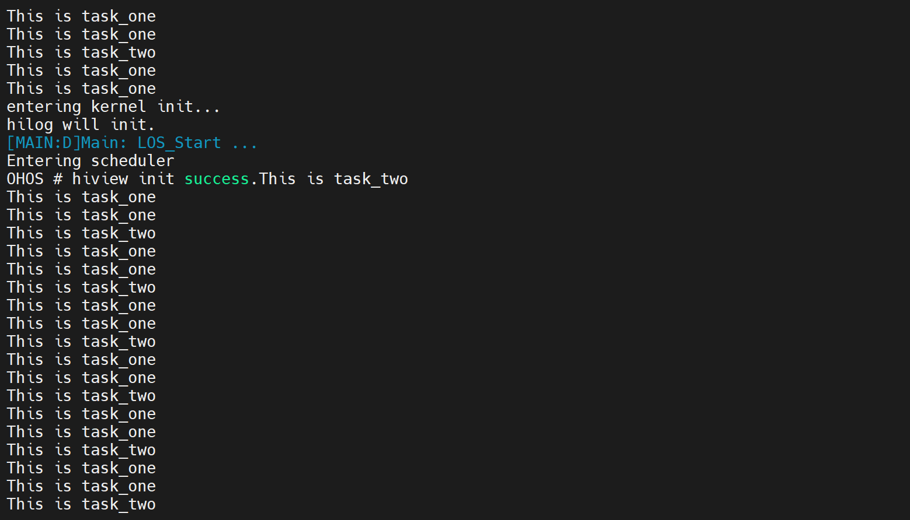
3. 综合实验-智慧家居
第一步：修改连接华为云的参数 host ， client_id，device_id，password
创建连接网址：https://iot-tool.obs-website.cn-north-4.myhuaweicloud.com/
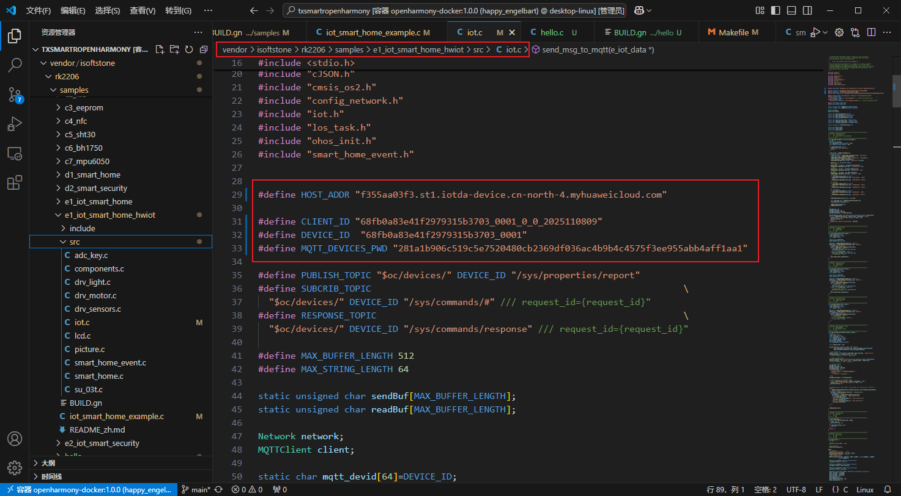
第二步：修改华为云产品的service_id 以及相关设备属性 ，保持设备端与云端名称一致
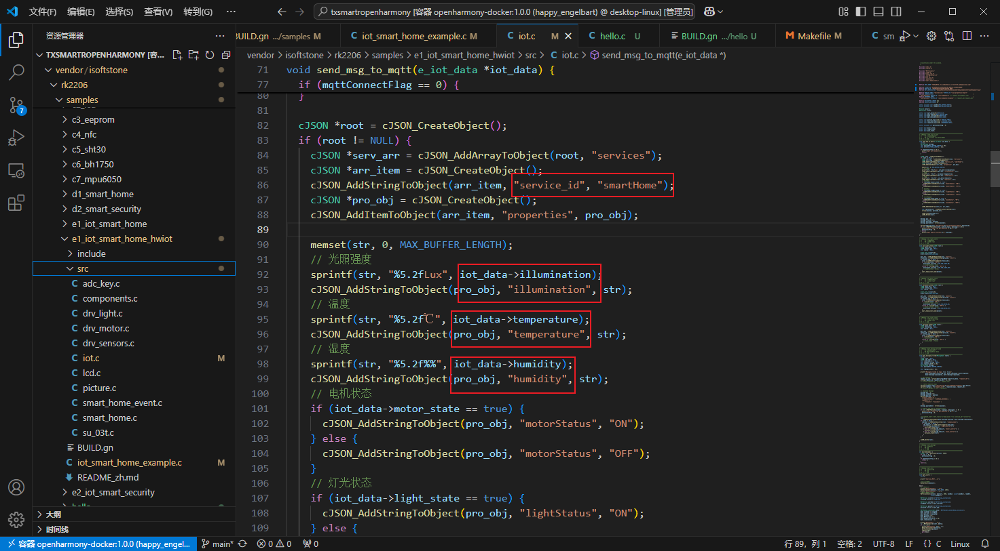
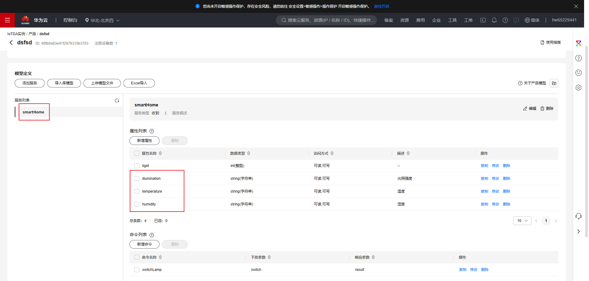
第三步：修改WiFi连接，让开发板可以连接手机WiFi
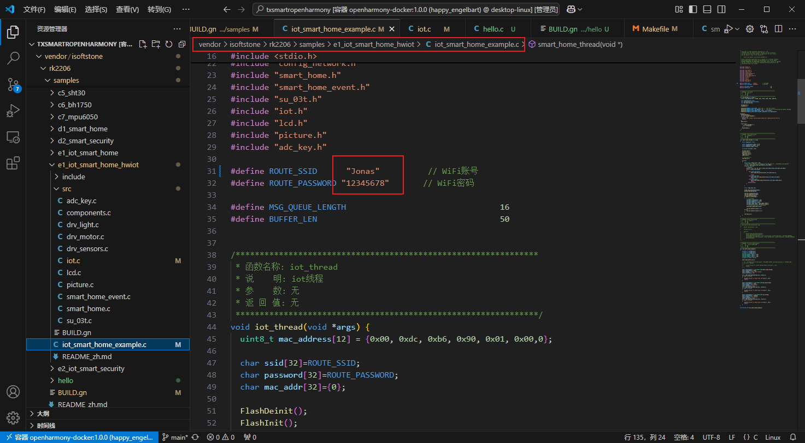
第四步：按照基本使用修改gn文件和makefile文件
第五步：使用命令：hb build -f 编译代码，然后烧录运行
第六步：就可以看到云端的数据变化了
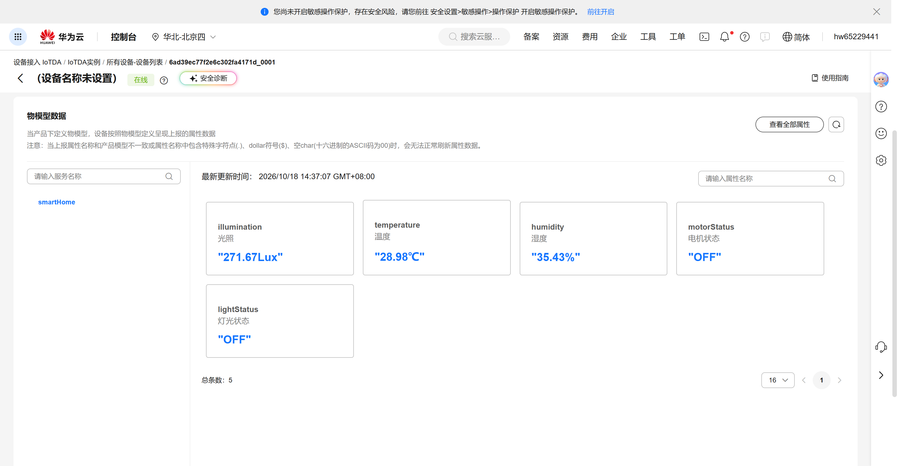